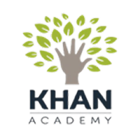
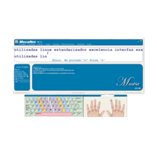

|
EJERCITADORES |

|
|
Es un software que permite practicar algún concepto o habilidad ya aprendida. Se pueden ejercitar operaciones matemáticas, ortografía, vocabulario o cualquier habilidad que dependa sobre todo de la repetición mecánica. Su objetivo principal es proporcionar práctica y reforzamiento. Los ejercitadores se distinguen por dos características comunes: 1 Divisiones: Se dividen en tareas más fáciles o más difíciles según las respuestas que el estudiante proporcione a los problemas presentados. 2 Retroalimentación: confirman las respuestas correctas y brindan una explicación a las incorrectas, o una práctica adicional. Los ejercitadores ayudan a desarrollar la automatización, es decir, los estudiantes se familiarizan mucho con los conceptos y habilidades que aplican automáticamente cuando continúan con actividades intelectuales de mayor nivel. Asimismo, la utilización de ejercitadores es más motivadora que las tareas similares con papel y lápiz; pueden brindar una retroalimentación inmediata y llevar un registro individual en progreso. Son muy comunes en instituciones educativas, y además ayudan a las personas con capacidades diferentes. |
Estos sistemas proveen una gran cantidad y variedad de ejercicios que cubren diversos niveles de contenido y dominio del material y a los que el aprendiz debe responder de acuerdo con esquemas de respuesta predefinidos, en un ambiente de evaluación acorde con los objetivos que se desea alcanzar. El ciclo de acciones que siguen los Sistemas de Ejercitación y Práctica: En cuanto a la selección de los ítems puede haber algunas variantes: de iteraciones o de tiempo. |
|
ejercitadores |
EJEMPLOS |
|
UNO |
Geogebra
Es básicamente un procesador geométrico y un procesador algebraico, es decir, un compendio de matemática con software interactivo que reúne geometría, álgebra, estadística y cálculo, por lo que puede ser usado también en física, proyecciones comerciales, estimaciones de decisión estratégica y otras disciplinas. |
|
DOS |
 |
Khan Academy
Una nueva manera de enseñar matemáticas y más... Khan Academy es una plataforma web para aprender a través de vídeos materias como cálculo, álgebra, química, biología, astronomía, finanzas, etc… con muchos ejercicios prácticos, sobre todo en matemáticas y con evaluaciones y estadísticas de cada alumno. |
TRES |

|
Lumosity
Es un programa en línea que consiste en diversos juegos para mejorar y entrenar la memoria, la atención, la velocidad, la resolución de problemas y la flexibilidad, etc. |
CUATRO |
Duolingo
Es una aplicación que permite aprender idiomas online y gratis. Duolingo es una plataforma online que te permitirá aprender inglés, francés o portugués (entre otros idiomas) de forma gratuita y entretenida. |
|
CINCO |
 |
MecaNet
Es una aplicación diseñada para aprender mecanografía desde tu ordenador, pero usando los métodos académicos tradicionales, con MecaNet tendrás una buena herramienta para mejorar tu velocidad en el teclado. |
| VER Infografía |
Tema por : Bolaños Sánchez Yael Alejandro
SOFTWARE |
| Anterior | Menú | Siguiente |